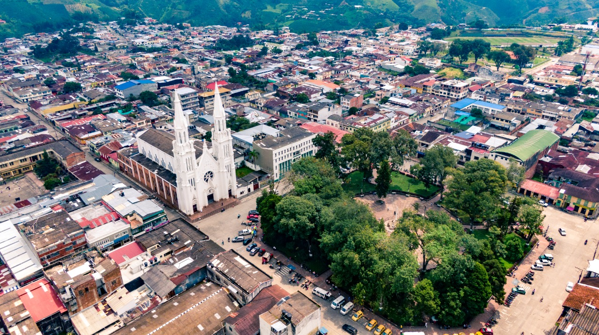

Tolima es un departamento ubicado en el centro de Colombia. Su capital es Ibague. El departamento cuenta con una variada geografia que incluye llanuras, montanas y rios. Ademas, es conocido por su rica historia cultural y su participacion en la independencia de Colombia.